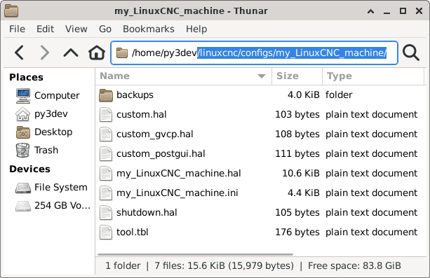
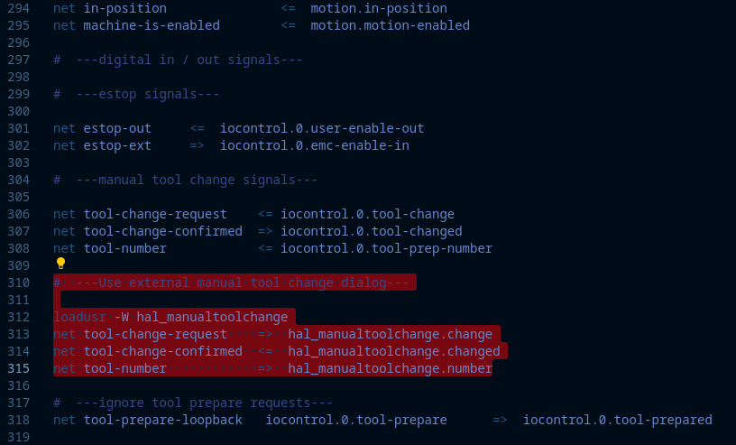

Machine Configuration (INI, HAL, Files)
Creating a working Machine Configuration for Probe Basic
Probe Basic uses some different methods to offer its feature-rich user experience, which requires customized files and settings inside the HAL and INI files to function properly. Below is a guide to help create a working machine configuration for Probe Basic. This guide assumes a basic installation with manual tool changes. A future document will be available for more complex configurations with ATC and Coolant Cannon functionality.
Step 1: Create a basic configuration
Create a configuration for your machine using Pncconf or mesact/mesact2 from the LinuxCNC menu in the applications drop-down in the upper menu bar. In this example, we are using Pncconf.
It is recommended to use the Axis GUI display for this initial build.
Have your machine’s wiring schematic premade to make filling in the required information fast, easy, and accurate in Pncconf.
After completing the Pncconf configuration builder and creating a new machine configuration saved in the LinuxCNC config directory, start LinuxCNC using your new config to verify there are no errors.
Test the machine to verify the base functionality is correct (e.g., jogging, spindle function, axis motion).
Once completed and found to function correctly, proceed to step 2.
Step 2: Copy required files

In the LinuxCNC config folder, locate your new config folder and the “probe_basic_machine_config_setup_files” folder.
Open two folder windows on the desktop: the new Pncconf folder created for your machine and the probe_basic_machine_config_setup_files folder.
Clean up the Pncconf folder by removing unneeded files (see images below for reference).
Copy the required files from the probe_basic_machine_config_setup_files folder to the Pncconf config folder.

Step 3: Edit INI files
Open the Pncconf “my_LinuxCNC_machine.ini” file side by side with the supplied “probe_basic_required_ini_items.ini” file in a text editor.
Integrate the lines from “probe_basic_required_ini_items.ini” into your existing file: - If a line is present in your machine file, use the Probe Basic settings for that line. - If a line is not in your machine file, copy it to the appropriate section in “my_LinuxCNC_machine.ini”.
Note that only ONE postgui HAL file can be called. Add any additional items to the existing probe_basic_postgui.hal file.
Save the file and delete the “probe_basic_required_ini_items.ini” file from the folder.

Step 4: Modify HAL file
Add digital and analog IO to the HAL file by modifying the following line:
loadrt [EMCMOT]EMCMOT servo_period_nsec=[EMCMOT]SERVO_PERIOD num_joints=[KINS]JOINTSAdd this to the end of the line:
num_dio=6 num_aio=3The finished edit should look like this:
loadrt [EMCMOT]EMCMOT servo_period_nsec=[EMCMOT]SERVO_PERIOD num_joints=[KINS]JOINTS num_dio=6 num_aio=3

Remove the tool change section as shown in the image below:
Launching Probe Basic
Under the CNC section of the drop-down applications menu, find your machine configuration and select it to launch.
Check the box at the bottom of the launch window to create a desktop icon for easier starts.
To set the Probe Basic icon: - Right-click the desktop launcher and select “edit launcher” - Click the current icon image - Find and select the icon named “probe_basic_mill”
You should now be ready to use Probe Basic with your machine configuration.